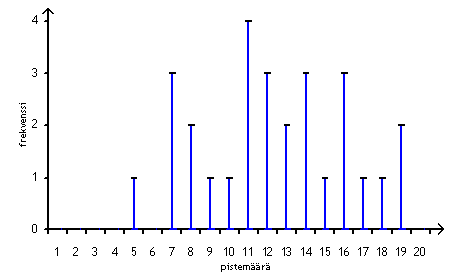
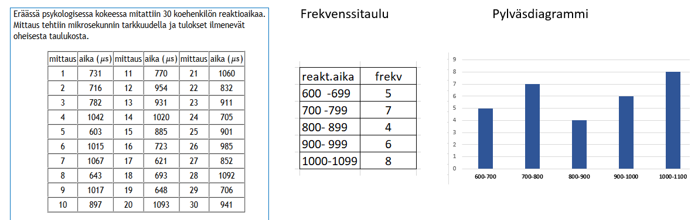

Tilastolliset tunnusluvut
Contents
Tilastolliset tunnusluvut¶
Tilastolliset muuttujat¶
Tilastotutkimoksen kohderyhmää kutsutaan tilasto-opissa populaatioksi
Suuresta populaatiosta otetaan usen satunnaisvalinnalla otos, johon tutkimus kohdistetaan.
Tilastotutkimuksissa mitattavia ominaisuuksia ja suureita sanotaan tilastomuuttujiksi.
Muuttujat voivat olla numeerisia tai luokkamuuttujia
Jos numeerisen muuttujan mahdolliset arvot voidaan luetella, muuttujaa sanotaan diskreetiksi
Jos numeerisen muuttujan kahden arvon välissä voi olla ääretön määrä arvoja, muuttuja on jatkuva
Diskreetin muuttujan arvojen jakauman esittäminen¶
Tavanomaisia diskreetin jakauman esitystapoja ovat frekvenssitaulu ja pylväskaavio
Esim. Kokeeseen, jonka maksimipistemäärä oli 20, osallistui 28 opiskelijaa. Kokeen arvosanat olivat 19,11,16,12,7,11,10,15,7,11,17,9,7,14,14,13,8,16,12,19,8,12,14,5,16,18,13 ja 11. Laadi arvosanajakaumasta frekvenssitaulu ja pylväskaavio.
Frekvenssitaulu
pisteet |
lkm |
pisteet |
lkm |
|---|---|---|---|
5 |
1 |
13 |
2 |
7 |
3 |
14 |
3 |
8 |
2 |
15 |
1 |
9 |
2 |
16 |
3 |
10 |
1 |
17 |
1 |
11 |
4 |
18 |
1 |
12 |
3 |
19 |
2 |
Pylväskaavio

Tilastollisia tunnuslukuja¶
Muuttujan arvojen jakaumaa voidaan kuvata myös tilastollisilla tunnusluvuilla.
Keskiluvut pyrkivät kuvaamaan muuttujan keskimääräistä tai tyypillistä arvoa. Keskilukuja ovat keskiarvo, mediaani ja tyyppiarvo
Hajontaluvut kuvaavat arvojen jakautumista ja hajontaa. Hajontalukuja ovat varianssi, keskihajonta, ylä- ja alaneljännes, sekä prosenttipiste.
Keskiarvon ja keskihajonnan kaavat
keskiarvo: \(\hspace{1cm}\mu=\frac{x_1+x_2+...+x_n}{n}=\frac{\sum x_i}{n}\)
keskihajonta: \(\hspace{5mm}\sigma=\sqrt{\frac{\sum (x_i-\mu)^2}{n}}\) (ns. populaatiokeskihajonta)
\(x_1, x_2,...\) ovat muuttujan arvot, n = arvojen lukumäärä
Mediaani on lukujoukon keskimmäinen luku: puolet joukon luvuista on pienempiä ja puolet suurempia kuin mediaani
Tyyppiarvo eli moodi on muuttujan arvo, jonka frekvenssi on suurin
Prosenttipiste, jonka parametrina on prosenttiluku p ilmoittaa muuttujan arvon, jonka alapuolelle jää p prosenttia arvoista
Ylä- ja alaneljännes ovat prosenttipisteen erikoistapauksia vastaten prosenttiarvoja 75 ja 25.
P90-arvo on mm. rakennusten sisäilmamittauksissa käytetty viitearvo, joka tarkoittaa prosenttipistettä, kun p = 90.
Tilastolliset tunnusluvut Excelissä¶
Excelissä on funktiot kaikille em. tilastollisille tunnusluvuille. Alkuperäiset muuttujan arvot kannattaa kirjoittaa samaan sarakkeeseen tai samalle riville. Jos aiemman esimerkin koetulokset kirjoitetaan solualueelle \(A1:A28\), voidaan tunnusluvut laskea Excel-funktioilla ao. taulukon mukaisesti
tunnusluku |
suom.Excel |
engl.Excel |
|---|---|---|
keskiarvo |
=keskiarvo(A1:A28) |
=average(A1:A28) |
keskihajonta |
=keskihajonta.p(A1:A28) |
=stdev.p(A1:A28) |
mediaani |
=mediaani(A1:A28) |
=median(A1:A28) |
tyyppiarvo |
=moodi(A1:A28) |
=mode(A1:A28) |
yläneljännes |
=neljännes(A1:A28;3) |
=quartile(A1:A28;3) |
alaneljännes |
=neljännes(A1:A28;1) |
=quartile(A1:A28;1) |
P90- arvo |
=prosenttipiste(A1:A28;90%) |
=percentile(A1:A28;90%) |
suurin arvo |
=suurin(A1:A28) |
=max(A1:A28) |
pienin arvo |
=pienin(A1:A28) |
=min(A1:A28) |
lukumäärä |
=laske(A1:A28) |
=count(A1:A28) |
Jatkuvan muuttujan esittäminen ja tunnusluvut¶
Muuttuja on jatkuva, kun mahdollisia arvoja on ääretön tai hyvin suuri määrä. Tällöin muuttujan eri arvojen frekvensseistä muodostettava frekvenssitaulukko ja siitä laadittu pylväskaavio eivät ole mielekkäitä esitystapoja analyysin kannalta.
Ratkaisu ongelmaan on aineiston luokittelu.
Muuttujan arvojen luokittelusta
Sopiva luokkien määrä on 5 - 16, enintään \(\sqrt{n}\) , missä n on havaintojen lukumäärä
Luokkien alarajojen tulisi olla mielellään pyöreitä lukuja
Luokan ylärajan tulisi olla mittaustarkkuuden verran seuraavan luokan alarajan alapuolella
Pienimmän muuttujan arvon tulee sijaita alimmassa luokassa, suurimman arvon ylimmässä
Esim. Alla on 30 koehenkilön reaktioajan mittaustulokset. Reaktioajat on luokiteltu viiteen tasaväliseen luokkaan ja jakauma on esitetty pylväskaaviona.

Jatkuvan muuttujan tunnusluvuista¶
A. Mikäli alkuperäinen data on kokonaisuudessaan tallessa sähköisessä muodossa, voidaan se siirtää Exceliin, ja laskea Excelin tilastofunktioita käyttäen tunnuslukujen tarkat arvot.
Reaktioaikaesimerkissä saadaan tunnusluvuille seuraavat arvot:
keskiarvo 861.2
keskihajonta 153.0
mediaani 891
alaneljännes 718
yläneljännes 1008
P90 prosenttipiste 1061
B. Usein alkuperäinen data ei ole käytettävissä, joten tunnusluvut on pyrittävä määrittämään luokitellun aineiston perusteella.
Keskiarvon ja keskihajonnan laskeminen luokitellusta aineistosta
keskiarvo: \(\hspace{1cm}\mu=\frac{\sum f_ix_i}{n}\)
keskihajonta: \(\hspace{5mm}\sigma=\sqrt{\frac{\sum f_i(x_i-\mu)^2}{n}}\)
missä \(x_i\) ja \(f_i\) on luokan i luokkakeskus ja frekvenssi, n = arvojen kokonaismäärä
Määritä esimerkin reaktioaikojen keskiarvo luokitellusta aineistosta
keskiarvo: \(\mu=\frac{5\cdot 650+7\cdot 750+4\cdot 850+6\cdot 950+8\cdot 1050}{30}=870\)
keskihajonta: \(\sigma=\sqrt{\frac{5\cdot (650-870)^2 + 7\cdot (750-870)^2+...+ 8\cdot (1050-870)^2}{30}} = 146\)
Ero alkuperäisestä datasta laskettuihin tarkkoihin arvoihin 861.2 ja 153.0 on pieni.
Otantakeskihajonta ja populaatiokeskihajonta¶
Kokonaistutkimuksessa mitataan muuttujan arvo koko populaatiosta.
Otantatutkimuksessa valitaan jotain otantamenetelmää käyttäen populaatiosta osajoukko, jota sanotaan otokseksi (sample).
Otoksesta lasketut tunnusluvut poikkeavat sitä enemmän populaation tunnusluvuista, mitä pienempi on otoskoko (sample size)
Keskihajonta lasketaan hieman eri kaavalla riippuen siitä, onko kyseessä kokonaistutkimus vai otantatutkimus.
Niistä käytetään termejä populaatiokeskihajonta ja otoskeskihajonta.
Suurilla otoskoon arvoilla kaavojen antamien arvojen ero on erittäin pieni.
Otoskeskihajonta ja populaatiokeskihajonta
populaatiokeskihajonta: \(\sigma=\sqrt{\frac{\sum (x_i-\mu)^2}{n}}\)
otoskeskihajonta: \(\hspace{10mm}s=\sqrt{\frac{\sum (x_i-\mu)^2}{n-1}}\)